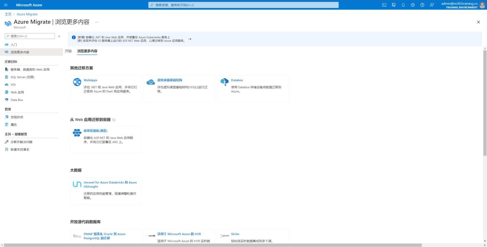

Azure Migrate provides a centralized hub to assess and migrate to Azure on-premises servers, infrastructure, applications, and data.
Azure Migrate
Unified migration platform: A single portal to start, run, and track your migration to Azure.

Azure Migrate
Azure Migrate
Range of tools: A range of tools for assessment and migration. Azure Migrate tools include Azure Migrate: Discovery and assessment and Azure Migrate: Server Migration. Azure Migrate also integrates with other Azure services and tools, and with independent software vendor (ISV) offerings.
Azure Migrate
Assessment and migration: In the Azure Migrate hub, you can assess and migrate:
1. Servers, databases, and web apps: Assess on-premises servers including web apps and SQL Server instances and migrate them to Azure virtual machines or Azure VMware Solution (AVS) (Preview).
2. Databases: Assess on-premises databases and migrate them to Azure SQL Database or to SQL Managed Instance.
3. Web applications: Assess on-premises web applications and migrate them to Azure App Service.
4. Virtual desktops: Assess your on-premises virtual desktop infrastructure (VDI) and migrate it to Windows Virtual Desktop in Azure.
5. Data: Migrate large amounts of data to Azure quickly and cost-effectively using Azure Data Box products.
Let me show you
How to discover, assess, and migrate something from everywhere to Azure.